JM-Orgue
JM-Orgue es un órgano de tubos virtual para Windows, macOS y Linux. Reproduce directamente los sets de muestras de Hauptwerk y GrandOrgue, incluidos los grandes sets surround, y se toca con un teclado MIDI, una consola o el ratón. Este manual recorre el programa con capturas de pantalla de la versión 0.9.14.
© Martijn van der Kolk. Las capturas se han hecho con órganos de demostración y sets de prueba propios; las direcciones de red, los tokens de acceso y las carpetas de usuario se han vuelto ilegibles.
1. Primeros pasos
Instalación
Descarga el instalador de la última versión desde la página de versiones del proyecto (para Windows JM-Orgue_<versión>_x64-setup.exe) y ejecútalo. La instalación es para un solo usuario y no requiere derechos de administrador. Para Windows también hay un paquete MSI, para macOS un DMG y para Linux un AppImage o un deb.
El programa se puede usar libremente. Los sets de muestras no se incluyen: los obtienes de sus autores. En la página de inicio de la biblioteca se mencionan algunos autores que ofrecen sets gratuitos.
Actualización
JM-Orgue comprueba por sí mismo si hay una versión nueva. Si la hay, aparece un aviso en la parte superior. Elige Actualizar ahora: el programa descarga la actualización, comprueba su firma, la instala y se reinicia. Si primero solo quieres descargar, elige Descargar. También puedes comprobarlo a mano en Ajustes generales → Actualización y comentarios → Buscar actualizaciones.
Las tres pantallas principales
Arriba hay tres pestañas: Órgano (se toca), Ajustes del órgano (todo lo relativo al órgano cargado) y Ajustes generales (todo lo relativo al programa en conjunto). Las teclas F1, F2 y F3 pasan directamente de una a otra. La flecha junto al nombre del órgano cierra el órgano y vuelve a la biblioteca.
2. La biblioteca
Al iniciar ves la biblioteca de órganos: una tarjeta por órgano con foto, nombre, constructor, localidad y número de registros. Haz clic en una tarjeta para cargar el órgano.
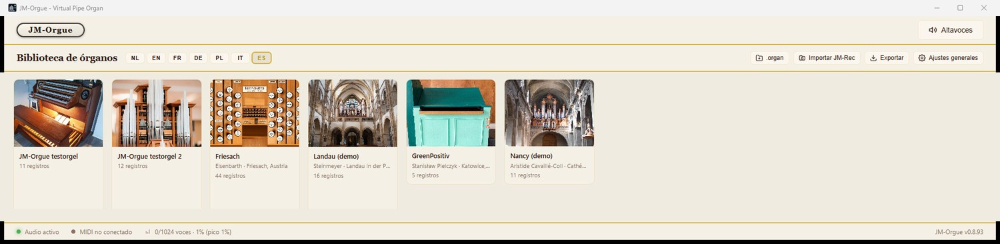
Añadir órganos
- .organ: elige la definición del órgano (GrandOrgue
.organo definición de Hauptwerk). Se elige el archivo de definición, no solo la carpeta de muestras: solo la definición conoce los registros, los acoplamientos, los trémolos y las posibles posiciones de grabación adicionales. - JM-Rec import: importa un set de muestras creado con JM-Rec.
- Exportar: crea a partir de una carpeta de muestras una definición de órgano (
.organ), que después cargas con el botón .organ.
Botones de la tarjeta: foto, búsqueda, eliminar
Al pasar el ratón por una tarjeta aparecen tres botones en la esquina superior derecha de la foto: buscar la foto en línea (globo), elegir la foto tú mismo (cámara) y quitar de la biblioteca (cruz). Quitar solo retira la tarjeta de la biblioteca; los archivos del disco permanecen. Si mantienes pulsada una tarjeta durante 3 segundos, el programa vuelve a buscar la foto.
La búsqueda en línea muestra algunas fotos de libre uso de Wikimedia Commons, a partir del nombre, el constructor y la localidad registrados en el set. Haz clic en una foto para adoptarla; la fuente y la licencia aparecen bajo la tarjeta. Si el set contiene demasiado pocos datos para encontrar algo, escribe tú mismo un término (iglesia, localidad o nombre del órgano) en el campo de la parte superior de la ventana y elige Buscar.
3. Cargar y tocar un órgano
Carga
Durante la carga, JM-Orgue lee en memoria el comienzo de cada grabación de tubo; el resto se lee mientras se toca. Un gran set surround puede por tanto tardar un poco; la barra de progreso muestra cómo va la carga.
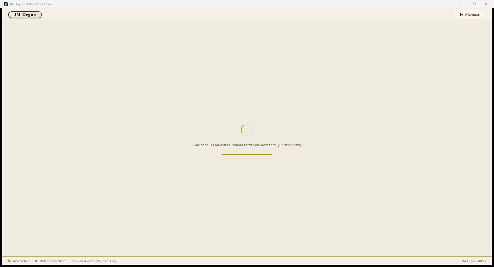
El motor
Tras la carga el motor del órgano está encendido por defecto en cuanto el set contiene una grabación del motor, y se oye enseguida un ligero viento. Para practicar en silencio sin ese ruido de viento, apaga el botón Motor en la barra de herramientas; la barra amarilla solo aparece cuando el motor está realmente parado. Qué sonidos de fondo están activos por defecto y con qué volumen se ajusta desde la barra de herramientas con el pequeño mezclador junto al botón de sonidos de fondo.
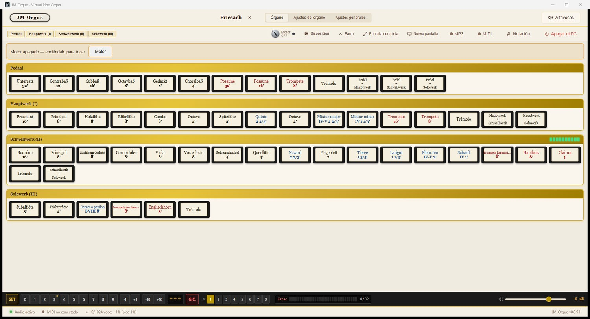
Registros, acoplamientos y trémolos
Cada teclado tiene su propio cuadro de registros. Haz clic en un botón para sacar el registro; los registros sacados se vuelven amarillos. El color del nombre indica la familia: las lengüetas, por ejemplo, son rojas, las mixturas y las quintas azules. En cada cuadro también están el trémolo y los acoplamientos (por ejemplo «Hauptwerk + Schwellwerk»). La barra verde a la derecha en la cabecera del teclado muestra la posición de la caja expresiva.
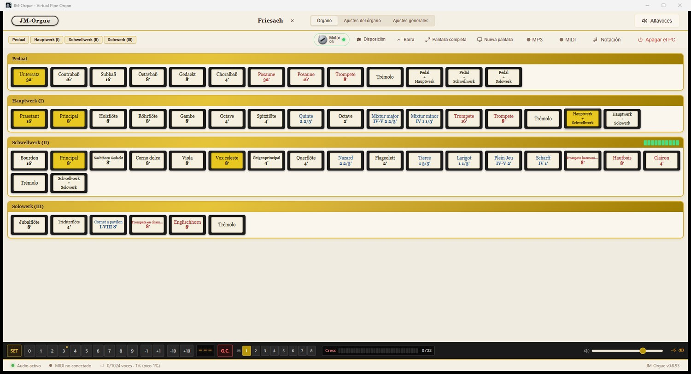
La barra del combinador
Abajo está la barra del combinador (setzer) con los mandos de la consola:
| Elemento | Función |
|---|---|
| SET y 0–9 | Pulsa SET y luego una cifra para guardar la registración actual; la cifra sola la recupera. Un puntito junto a la cifra indica que ahí hay una registración guardada. |
| −1 / +1, −10 / +10 | Pasa a la registración anterior o siguiente, o diez hacia delante o hacia atrás. |
| G.C. | General Cancel: todos los registros apagados. |
| M 1–8 | Niveles de memoria: ocho bancos separados de registraciones. |
| Cresc | Crescendo general (véase el capítulo 7). La barra muestra el escalón actual. |
| Deslizador de volumen | Volumen principal. Un doble clic restablece el valor predeterminado; con la rueda del ratón cambia de 1 dB en 1 dB. |
Cada botón de la barra del combinador se puede vincular a un botón de tu consola: haz clic con el botón derecho (o mantén pulsado 3 segundos) y luego pulsa el botón en la consola.
Aprender el canal MIDI de un teclado
No hace falta pasar primero por los Ajustes del órgano: haz clic derecho sobre el nombre de una división encima de los registros — o manténlo pulsado 2 segundos en una pantalla táctil — y el programa pide la nota más grave y la más aguda de ese teclado. El canal queda ajustado sin salir de la consola.
4. La barra de herramientas
Sobre los registros está la barra de herramientas. A la izquierda, los teclados (Pedal, Hauptwerk, …) son botones: con ellos muestras u ocultas el teclado. A la derecha están las funciones siguientes.
| Botón | Qué hace |
|---|---|
| Motor | Enciende o apaga el motor del órgano. |
| Disposición | Abre el menú de disposición (véase más abajo). |
| Barra | Muestra u oculta la barra principal con las pestañas y el botón de perfil. |
| Pantalla completa | Modo consola: solo registros y barra del combinador (F11). |
| Nueva pantalla | Abre una ventana adicional con los mismos registros, por ejemplo para un segundo monitor o un segundo teclado. |
| MP3 | Graba lo que oyes. La grabación va a Documentos\JM-Orgue-opnames. Haz clic en el contador rojo para detener; después el programa indica dónde está el archivo. |
| MIDI | Graba lo que tocas (solo las notas) como archivo .mid. Haz clic en el contador azul para detener y elige dónde guardar. |
| Notación | Abre la ventana de notación: las notas aparecen mientras tocas, con capas, sobregrabación y edición. Aquí también se puede abrir un archivo MIDI existente. |
| Apagar el PC | Cierra el software y el ordenador, tras confirmar; antes se guarda el último estado. Con el botón derecho o manteniendo pulsado 3 segundos se vincula el botón a un botón de la consola. |
El menú de disposición
Con Disposición adaptas el aspecto a la pantalla: Ajustar elige el tamaño de los botones para que todos los registros quepan en pantalla, los botones menos/más cambian el ancho y el alto de los botones, y además eliges si los teclados van uno debajo de otro o uno al lado de otro (vertical), botones redondos en lugar de rectangulares y dónde van los acoplamientos (en el teclado o en una barra propia). La elección se recuerda para cada órgano.
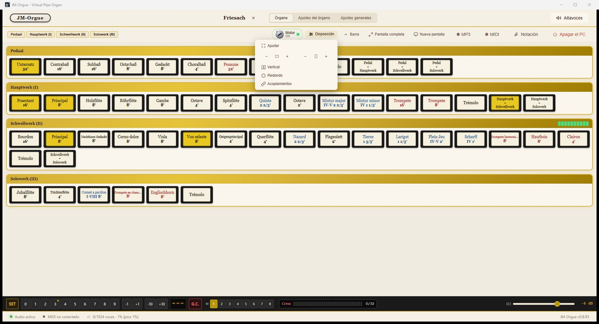
Pantalla completa (modo consola)
En este modo desaparecen la barra de título, la barra de tareas de Windows y la barra principal: solo ves los registros y la barra del combinador. Arriba hay una franja estrecha con cuatro botones: Barras (devuelve temporalmente la barra principal), Motor (encendido o apagado), Salir de pantalla completa y Apagar (cierra el software y el ordenador). F11 activa y desactiva este modo; Esc lo desactiva.
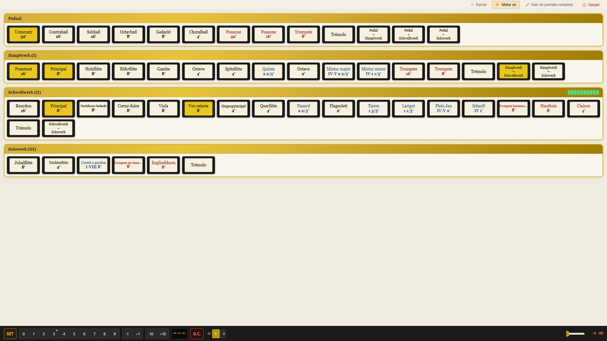
Una segunda pantalla
Nueva pantalla abre una ventana independiente que puedes arrastrar a otro monitor o dejar pequeña junto a la ventana principal. Tiene su propia disposición: si los botones son demasiado pequeños, elige Disposición y ajusta el ancho y el alto de los botones, o elige los teclados uno debajo de otro o uno al lado de otro.
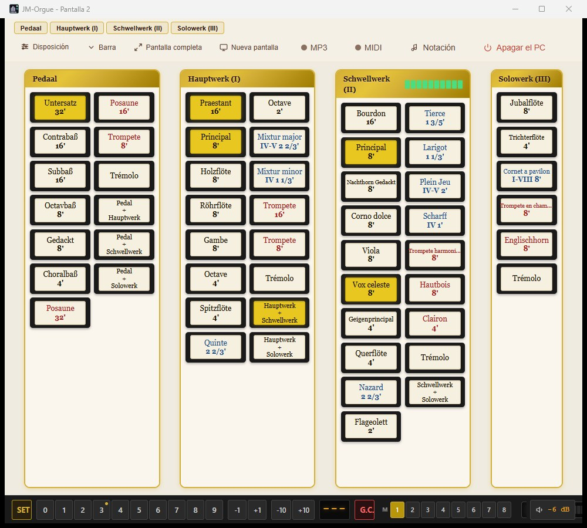
5. Varias posiciones de escucha
Algunos sets de muestras están grabados en varios puntos de la iglesia, por ejemplo cerca, delante, en medio y detrás. Un set así muestra en la barra de herramientas botones de Perspectiva, uno por posición. Haz clic en una posición para activarla o desactivarla; pueden sonar varias a la vez. A su derecha está la posición de escucha: un deslizador entre «cerca» y «al fondo» que mezcla de forma continua las posiciones grabadas.
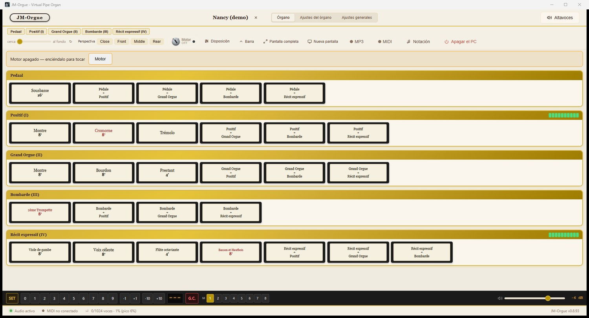
6. El asistente para un órgano nuevo
Cuando cargas un órgano por primera vez, se inicia solo el asistente «Configuración del órgano». En seis pasos repasa todo lo que hay que vincular a tu consola. Todo se puede cambiar después y puedes volver a iniciar el asistente en Ajustes del órgano → Enrutamiento → Asistente. Más tarde cierra el asistente y volverá a preguntar la próxima vez; Omitir (paso 1) lo omite por completo.
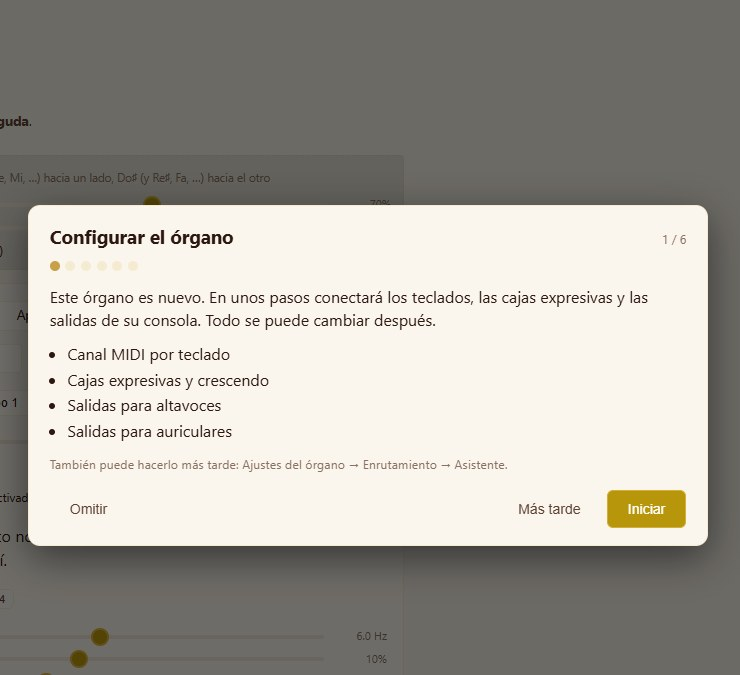
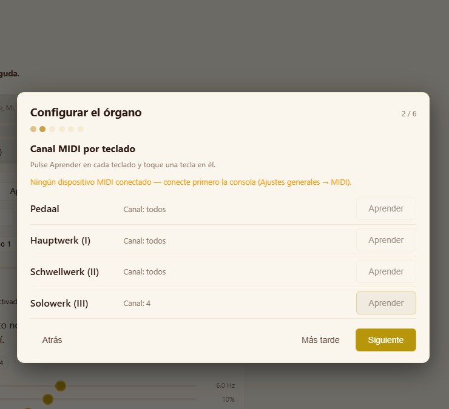
- Inicio: resumen de los pasos.
- Canal MIDI por teclado: para cada teclado elige Aprender y toca una tecla de ese teclado. El programa recuerda el canal. Los botones solo funcionan si hay un dispositivo MIDI conectado (Ajustes generales → MIDI); si no, aparece un aviso.
- Cajas expresivas y crescendo: elige Aprender y mueve el pedal de totalmente cerrado a totalmente abierto. Lo mismo vale para el crescendo general. Si el set tiene cajas expresivas por voz (capítulo 9), también aparecen aquí.
- Salidas para los altavoces: elige controlador y dispositivo, guárdalos como perfil «Altavoces» y elige para cada teclado las salidas de la interfaz de audio por las que debe sonar. Debajo están las mismas elecciones para el sonido del motor, el ruido ambiente y los clics de la mecánica, los registros de efectos y el ruido del trémolo, si el set los tiene.
- Salidas para los auriculares: lo mismo para el segundo perfil, por ejemplo la salida de auriculares. Desde ese momento cambias entre ambos perfiles con el botón Altavoces de arriba a la derecha.
- Listo: los ajustes se han guardado para este órgano.
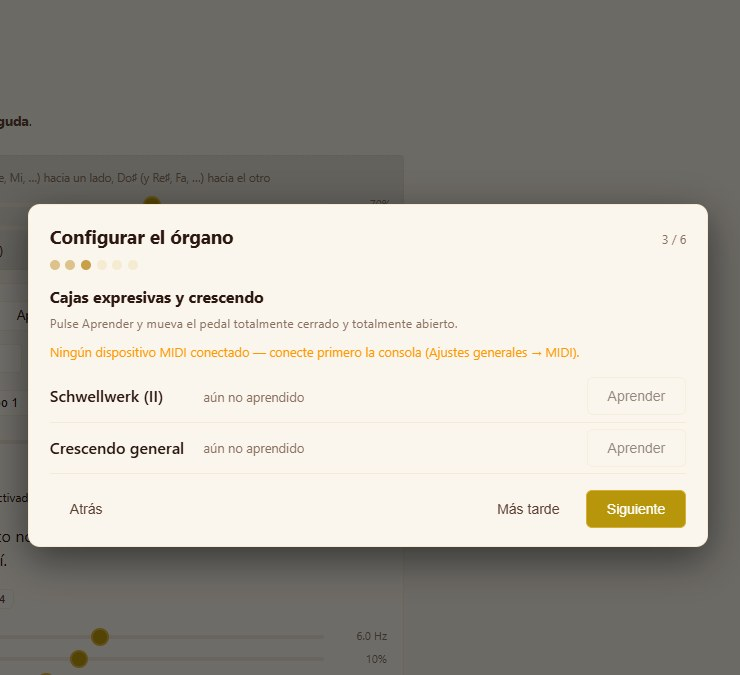
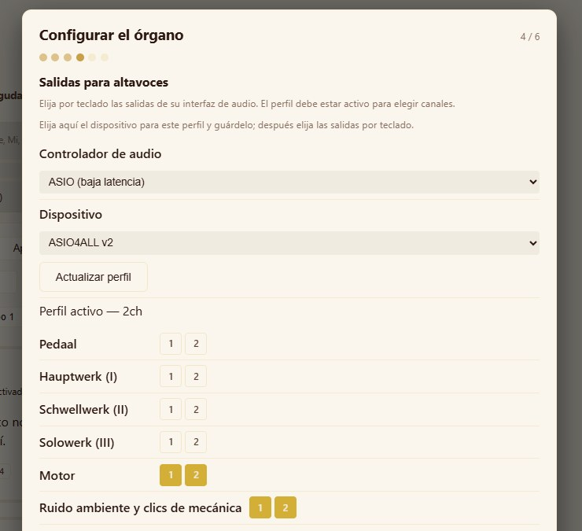
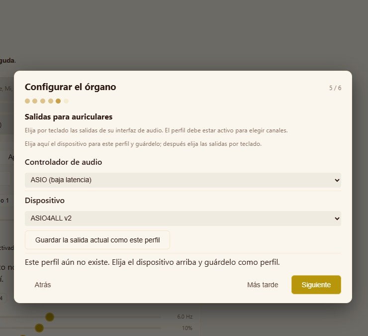
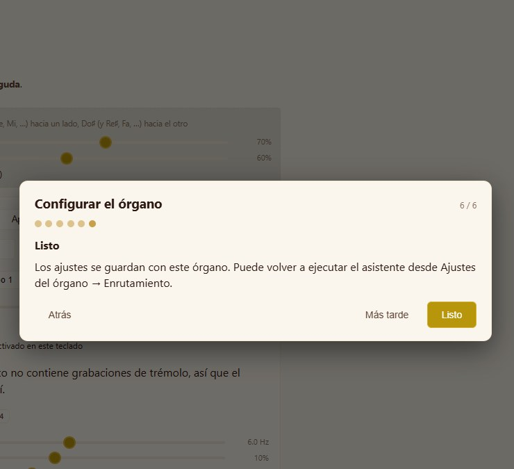
7. Ajustes del órgano
Todos los ajustes del órgano cargado se guardan con ese órgano. Arriba hay cinco pestañas: Sonido, Crescendo, Orden de registros, Enrutamiento y Todo; la última coloca todos los bloques uno debajo de otro.
Sonido
El primer bloque contiene los ajustes principales:
- Volumen: el volumen principal de este órgano.
- Temperamento: «Original» toca los tubos tal como fueron grabados. Los demás temperamentos (igual y temperamentos históricos) afinan los tubos según la altura medida de cada grabación. Bajo la elección ves cuántos tubos tienen una altura medida. Con Temperamento propio... ajustas tú mismo la desviación en cents para cada nota. Con Cargar archivo Scala… lees un archivo .scl (el formato mundial para temperamentos microtonales e históricos de la Fundación Huygens-Fokker); el temperamento cargado aparece en la lista y se guarda para sesiones posteriores.
- Afinación: todo junto más alto o más bajo, en cents.
La reverberación regula la reverberación. Si el set ya lleva la acústica de la iglesia en las grabaciones, se indica (con el botón Volver a la grabación (reverberación apagada) para desactivar la reverberación adicional): una reverberación adicional es entonces cuestión de gusto. Eliges entre Algorítmica (reverberación calculada con RT60, retardo, amortiguación y tamaño de la sala, también como preset) y De convolución (IR) con una respuesta al impulso (IR) propia. Con Mezcla decides cuánta reverberación se oye.
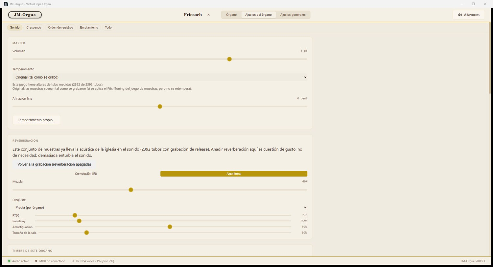
El timbre de este órgano es un ajuste de timbre independiente para cada órgano; la corrección para auriculares o altavoces es aparte, en los ajustes generales. El modelo de viento hace «respirar» al órgano: un acorde con muchos registros baja la presión del viento, como en un órgano real, y las flautas y las lengüetas reaccionan de forma distinta. Eliges el número de grupos de viento (qué teclados comparten los mismos fuelles) y, para cada grupo, el tamaño del fuelle, la amortiguación, la caída máxima de presión y el carácter del viento.
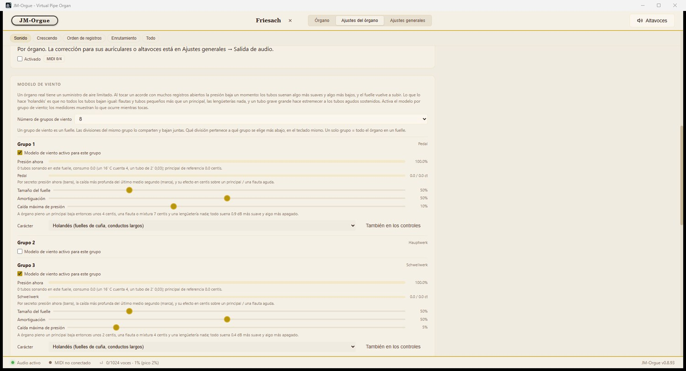
Ruidos muestra los sonidos continuos que contiene el set, como el motor y el ruido de la sala. Ajustas el volumen, enciendes o apagas el motor y puedes activar la mecánica del teclado (teclas que chasquean). La mecánica del teclado está desactivada de forma predeterminada, porque ocupa mucha memoria y exige volver a cargar el órgano.
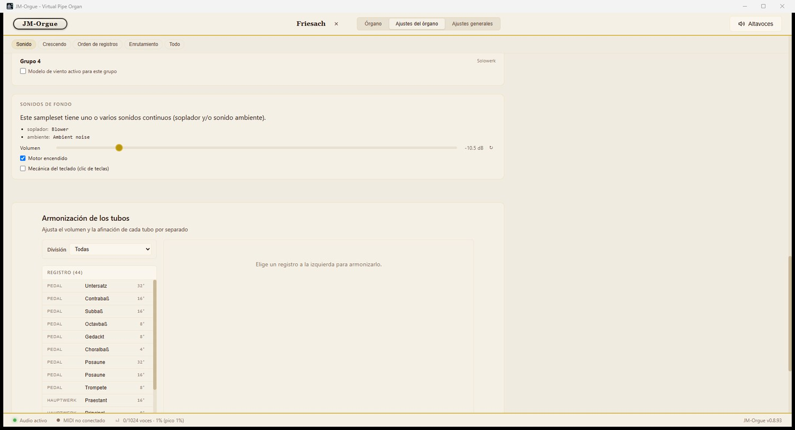
Al final está la entonación de los tubos: elige a la izquierda un registro y ajusta el volumen y la afinación de cada tubo por separado.
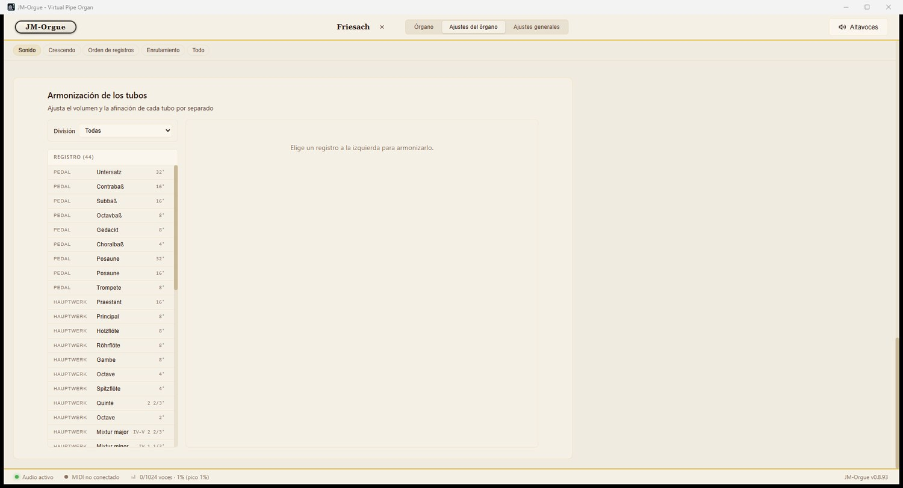
Crescendo
El crescendo general saca paso a paso cada vez más registros cuando mueves el pedal de crescendo. Tú decides qué registros entran en qué escalón:
- Activo enciende el crescendo; Escalones es el número de escalones.
- Relleno automático introduce una propuesta adaptada a los registros de este órgano. Con las opciones de debajo decides si entran los acoplamientos, si entran los registros de color (sesquiáltera, corneta, tercia), las lengüetas de 32′ y las chamadas, y si los acoplamientos de octava entran solo en el tutti. Borrar vacía la matriz.
- En la matriz, un clic en una casilla activa o desactiva ese registro en ese escalón; Shift+clic lo fija para todos los escalones a partir de ese.
- Aprender pedal vincula tu pedal de crescendo; abajo también puedes introducir a mano el canal y el número CC.
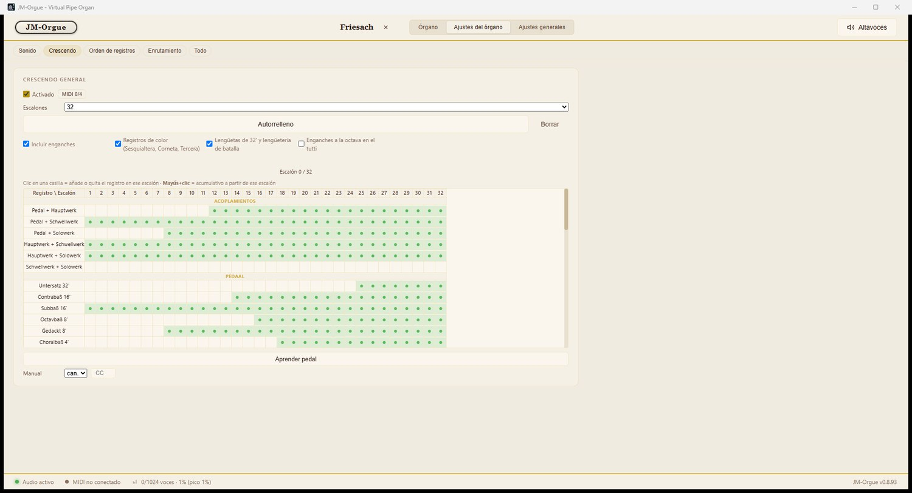
Orden de registros
Aquí decides el orden de los registros en cada teclado. Arrastra un registro por el asa para moverlo. Junto a cada registro ves la longitud en pies y la familia (color del nombre). Con las flechas cambias el orden paso a paso y Restablecer devuelve el orden del set.
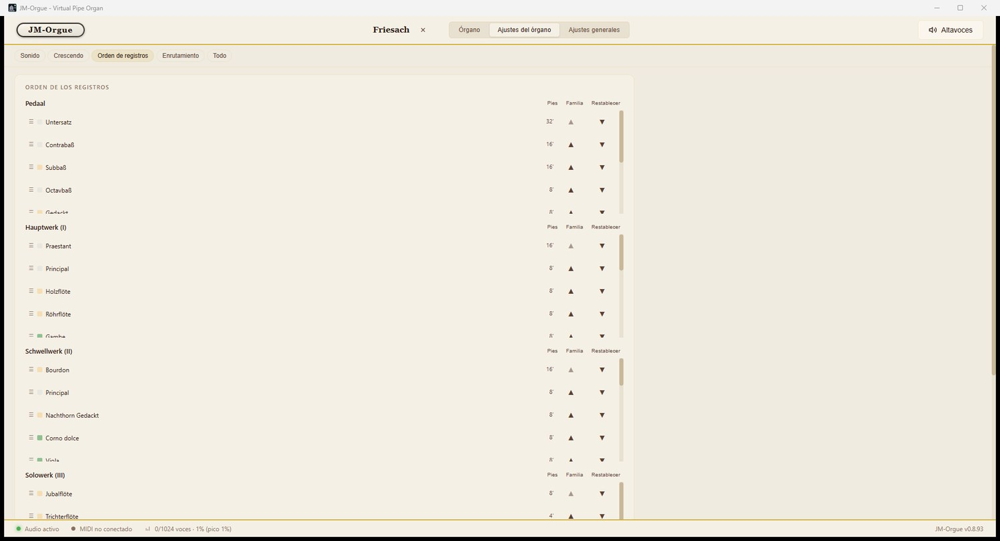
Enrutamiento
Esta pestaña vincula el órgano con tu hardware. Arriba hay un bloque para cada teclado:
- Canal: el canal MIDI por el que escucha el teclado («Todos» = cualquier canal). Aprender fija el canal y el rango cuando tocas primero la tecla más grave y luego la más aguda.
- Transp: transposición en semitonos. Rango: tecla más grave y más aguda. Octava corta: para sets con octava grave corta.
- Caja expresiva: activa la caja expresiva de ese teclado; aparecen entonces los botones para aprender el pedal y los ajustes de volumen mínimo y frecuencia de corte con la caja cerrada. El pedal también se aprende directamente desde la pantalla del órgano: clic derecho sobre la tira de LED verdes junto al nombre del teclado — o manténla pulsada 2 segundos en una pantalla táctil — y aparece el mismo cuadro «pedal cerrado / pedal abierto».
- Suministro de viento: a qué grupo de viento pertenece el teclado.
- Panorama y Salidas: posición en la imagen estéreo y canales de salida de la interfaz de audio por los que suena el teclado. Dos salidas consecutivas forman un par estéreo; un solo canal suena en mono.
- C/Cis: reparte los tubos en dos lados, como los secretos de Do y Do sostenido en un órgano real; la fuerza y la caída globales están en el bloque de arriba.
- LFO del trémolo: si el set no tiene grabaciones reales del trémolo, el programa lo calcula. Aquí se ajustan la velocidad, la amplitud y la altura.
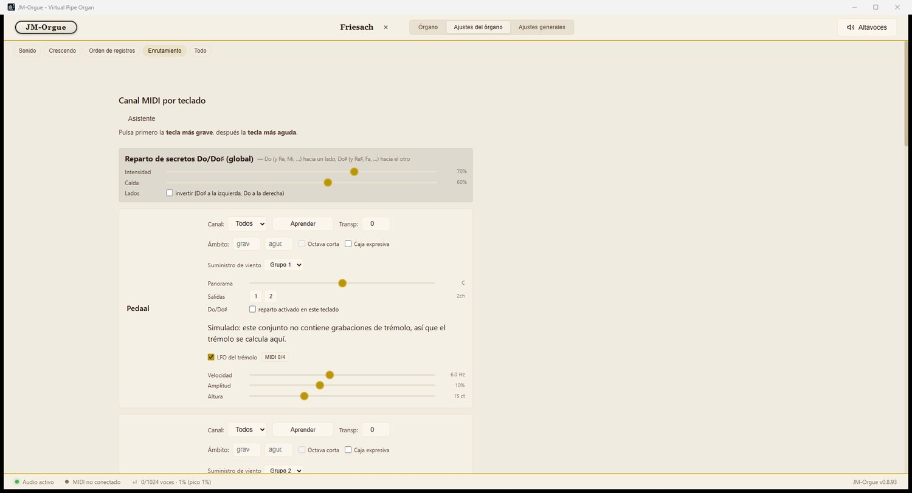
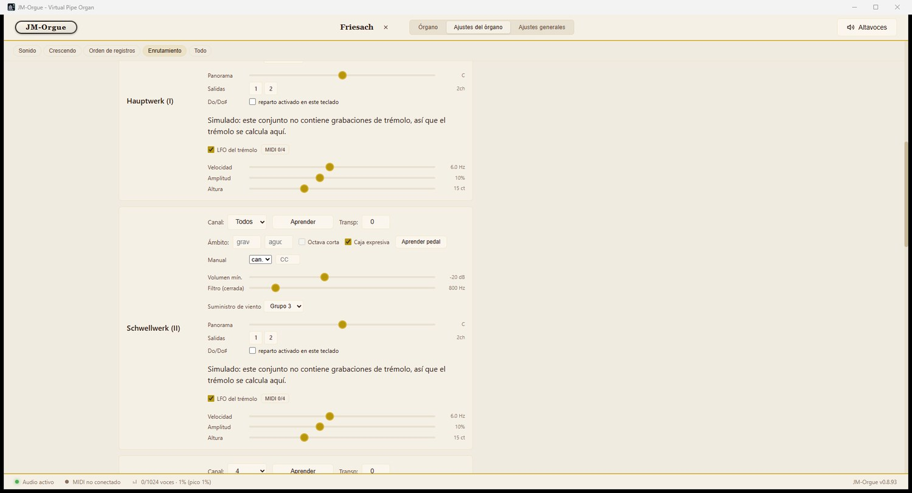
Más abajo está la Salida de audio de los ruidos: para cada tipo de sonido eliges por qué salidas suena. Motor es el sonido del motor; Ruido ambiente y clics de la mecánica se refiere al ruido de la sala y a los clics de registros y teclas; los sets con registros de efectos (cimbalstern, ruiseñor y similares) y ruido del trémolo tienen una fila propia. Importa sobre todo con más de dos salidas, cuando los teclados suenan por canales distintos de 1–2. Justo debajo:
- Teclado continuo: las teclas fuera del rango grabado de un registro tocan el tubo más cercano, transpuesto a la altura correcta, en lugar de callar. Un teclado de 61 teclas sigue así tocando en un set con menos notas. Las mitades de bajo y tiple de un registro partido (Trompeta 8 B/D, Corneta D, Lleno Bajo…) se detienen en el punto de división — el tiple sigue en el agudo, el bajo en el grave, pero nunca se superponen.
- Afinar automáticamente los tubos: afina los tubos según su altura medida, conservando los registros deliberadamente ondulantes. Activado de forma predeterminada.
- Corrección de altura: todo junto más alto o más bajo en cents (Cero restablece el valor).
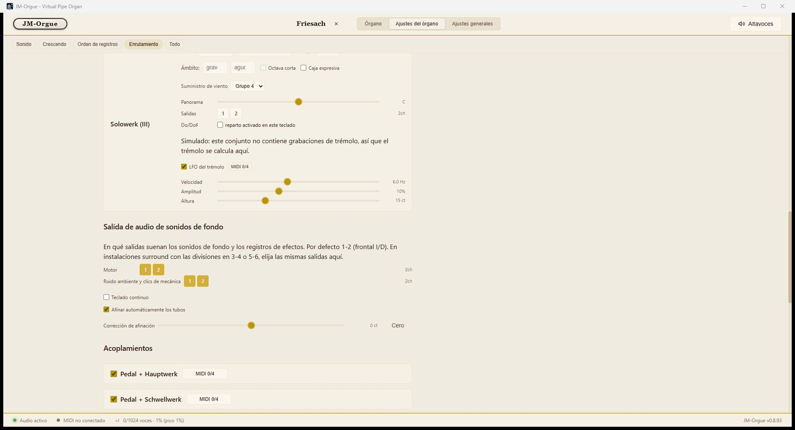
Más abajo están los Acoplamientos (activar y desactivar, con un botón MIDI para cada acoplamiento) y los acoplamientos adicionales: acoplamientos que no están en el set de muestras pero que resultan de la disposición de los teclados; marca lo que quieras añadir y aparece enseguida en la barra de acoplamientos. Las Asignaciones MIDI son una única lista de todas las asignaciones MIDI de este órgano, que puedes cambiar, eliminar o añadir a mano. Al final, Abrir .mid permite reproducir un archivo MIDI en el órgano.
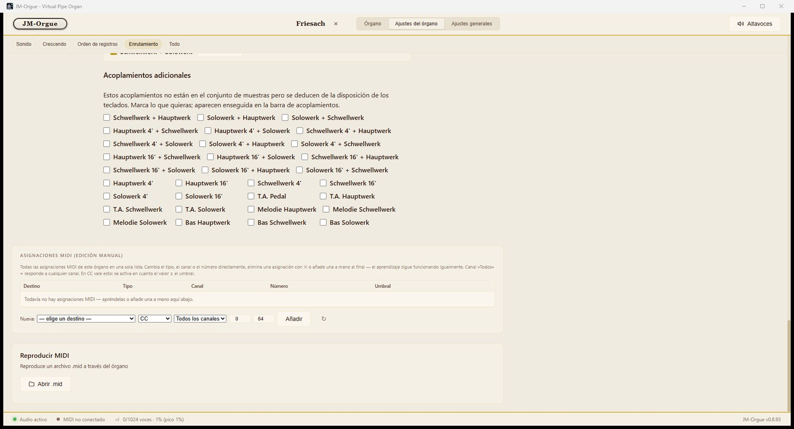
8. Ajustes generales
Estos ajustes valen para el programa en conjunto. Las pestañas son Salida de audio, Corrección de muestras, MIDI, Aprender botones, Visualización y Actualización y comentarios.
Salida de audio
- Controlador de audio y dispositivo: para la latencia mínima elige ASIO (por ejemplo el controlador de tu interfaz de audio); WASAPI funciona con la tarjeta de sonido normal de Windows. La línea «Actualmente» de debajo muestra qué está sonando ahora.
- Señal de prueba: haz clic en el número de un canal para enviar un sonido exactamente a esa salida y oír qué conector corresponde a qué altavoz.
- Polifonía y Núcleos de cálculo para la mezcla: el número máximo de tubos que suenan a la vez y el número de núcleos del procesador entre los que se reparte el trabajo de mezcla. La elección predeterminada se adapta a tu ordenador; el indicador de carga muestra el efecto.
- Reproducir las muestras estéreo en estéreo: conserva la imagen estéreo de las grabaciones estéreo. Desactivado significa mezcla mono y reduce a la mitad el uso de memoria de esos sets.
- Búfer inicial por grabación (novedad de esta versión): cuánto de cada grabación de tubo está de inmediato en memoria: 200 ms, 300 ms, 500 ms, 1 s o 2 s (predeterminado). Un búfer más corto ahorra mucha memoria y tiempo de carga; el resto se lee mientras se toca. La elección vale tras volver a cargar el órgano.
- Tamaño del búfer: más pequeño significa menos latencia, pero carga más el ordenador. Aplicar activa la elección.
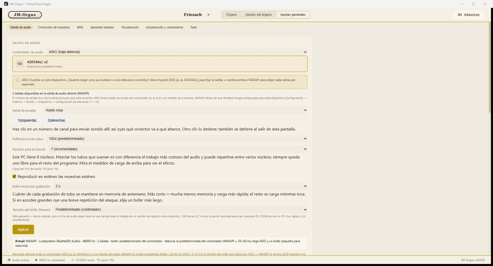
Los perfiles de salida guardan dos configuraciones completas de salida, por ejemplo altavoces por ASIO y auriculares por WASAPI, con la elección de canales de cada teclado. Elige la salida deseada, haz clic en Guardar la elección actual junto a Altavoces o Auriculares y luego cambia entre ambos con el botón Altavoces de arriba a la derecha o con un botón MIDI aprendido. El perfil activo aparece resaltado.
La corrección para auriculares o altavoces aplica una corrección de timbre solo a la salida (no al órgano): elige para qué perfil vale, actívala y elige un preset de la lista AutoEq, o importa o exporta una corrección propia.
Más abajo están las opciones para iniciar el programa automáticamente con Windows, cargar automáticamente el último órgano abierto, cerrar todo el software con la cruz de la pantalla adicional y restablecer la última registración. El archivo MIDI automático guarda en segundo plano todo lo que tocas como archivo .mid por sesión: empieza con la primera nota y termina tras un silencio.
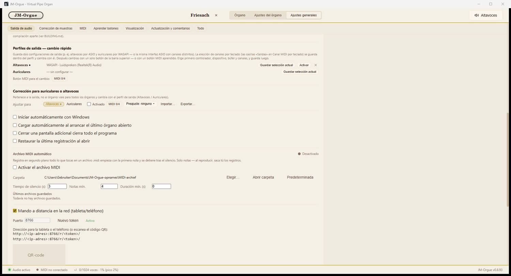
Con el control remoto en red (tableta/teléfono) manejas el órgano desde una tableta o un teléfono de la misma red wifi. El programa muestra una dirección y un código QR para escanear, y tú eliges qué elementos y qué teclados aparecen en la pantalla externa. La primera vez el Firewall de Windows pregunta si JM-Orgue puede recibir conexiones: elige «Permitir acceso» para las redes privadas.
Al final está la frecuencia de muestreo. Depende de la propia tarjeta de sonido: con ASIO se ajusta en el panel del controlador, con WASAPI en los ajustes de sonido de Windows.
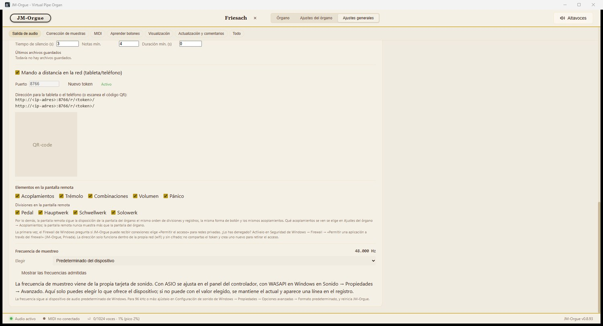
Corrección de muestras
Dos herramientas para ordenar las muestras del órgano cargado. Silencio antes del ataque encuentra y recorta el silencio al comienzo de las muestras (el umbral de silencio en dB y el comienzo que se conserva los ajustas tú); Bucles encuentra un buen bucle de sostenimiento, le añade un fundido cruzado para una transición suave y guarda los puntos de bucle en el archivo, con la opción de hacerlo solo para los archivos sin bucle. Con Escanear compruebas primero qué cambiaría. Los originales se guardan antes en una carpeta _backup, antes de sobrescribir los archivos.
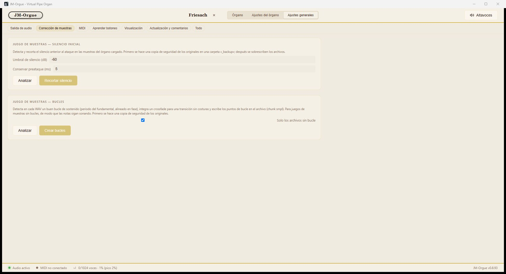
MIDI
Entrada MIDI muestra los dispositivos MIDI conectados (con Actualizar dispositivos buscas de nuevo); en Bluetooth MIDI buscas dispositivos inalámbricos con Escanear. El retorno de señalización (MIDI out) hace que tu consola se ilumine según la registración: elige el protocolo (luces de registros mediante Note On/Off, pantalla de texto de Hauptwerk o consola Johannus/Content), la salida MIDI, el canal y la nota base. Cada registro recibe entonces automáticamente un número de nota a partir de la nota base, o bien aprendes un botón real de la consola para cada registro con Aprender para cada voz….
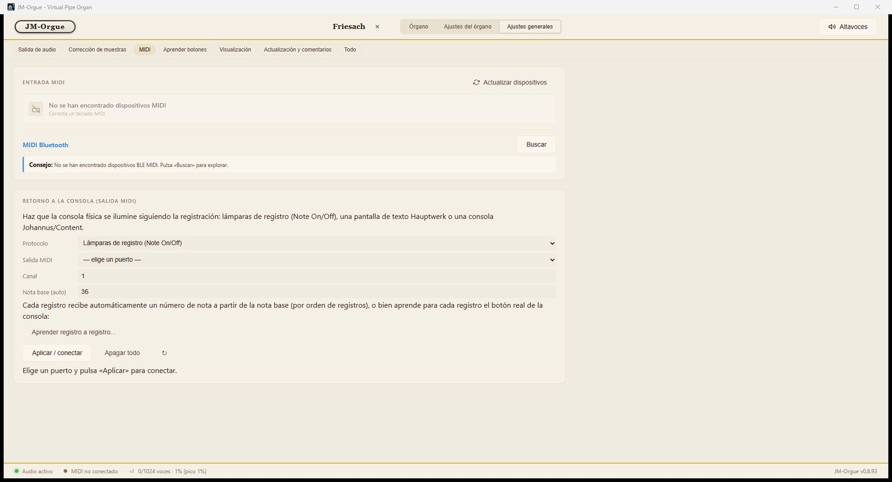
Aprender botones
Aquí aprendes los botones fijos de la consola (pistones): afinador, SET, pasos de presets, niveles de memoria y apagado del ordenador. Los botones de las cifras 0–9 se aprenden en la propia barra del combinador (botón derecho o pulsación de 3 segundos).
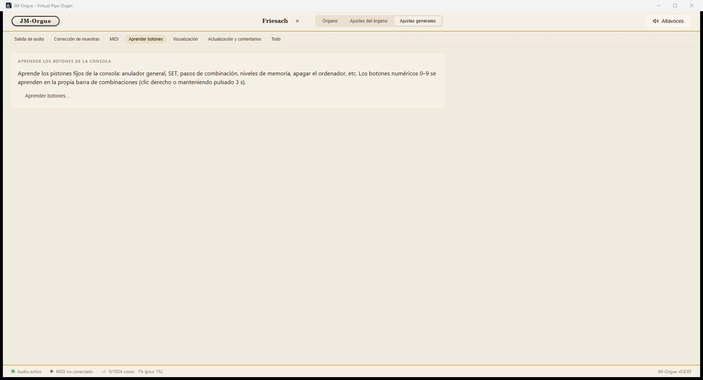
Visualización
Elige el idioma del programa (Nederlands, English, Français, Deutsch, Polski, Italiano y Español) y el aspecto: cinco presets de colores ya preparados (Básico, Madera clásica, Moderno minimalista, Noche y Atardecer), o ajusta colores propios, ponles nombre y expórtalos. Más abajo ajustas el estilo, el tamaño y el grosor de la letra de los registros, y el fondo.
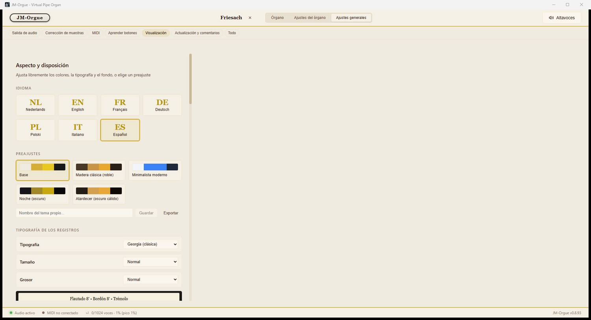
Actualización y comentarios
Aquí encuentras el número de versión, la información sobre las fuentes de los presets de auriculares y de los datos de altavoces utilizados, y los botones Enviar comentarios…, Por GitHub (issues) y Buscar actualizaciones.
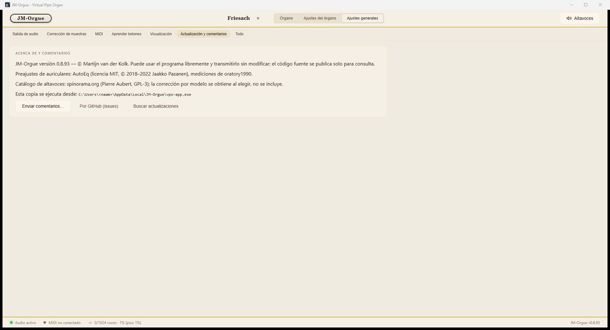
9. Configuración acústica de un set
La definición de un órgano puede remitir a un archivo adicional, JM-ACOUSTICS.json, que describe la acústica del set: cajas expresivas asignadas a una voz en lugar de a un teclado, respuestas al impulso para la reverberación, rutas de mezcla y salidas. Si tu set tiene un archivo así, lo reconoces por un bloque adicional en Ajustes del órgano → Sonido.
- El programa lee el archivo y lo comprueba: tamaño del archivo, validez de todas las referencias, rutas que permanecen dentro de la carpeta del órgano y vínculos de tubos que coinciden con la definición cargada. Si algo no está bien, el órgano suena simplemente según la definición normal y el bloque indica por qué no se leyó la configuración.
- Cajas expresivas por voz: las voces que el archivo coloca en una caja reciben su propia caja expresiva y su propio pedal de expresión, independientemente del teclado en el que suenen. Una voz usada por dos teclados sigue así siempre la misma caja. El pedal se aprende en Enrutamiento (Aprender pedal) o en el asistente.
- Las respuestas al impulso del set se enumeran bajo el bloque, con canales y duración. Con Usar como reverberación adoptas una como reverberación de convolución. El papel de los canales en tales grabaciones no está definido; el programa trata los dos primeros como un par estéreo.
- Las rutas de mezcla, los buses de salida y las transiciones de efectos del archivo no se aplican por ahora automáticamente; sigue mandando la definición normal.
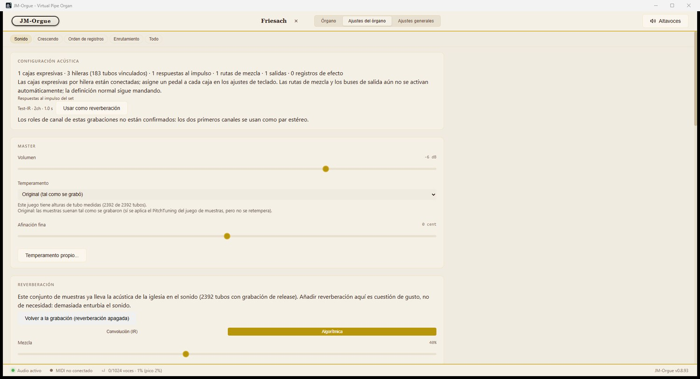
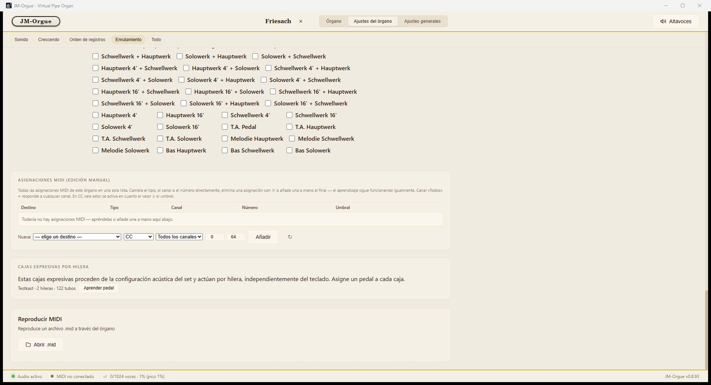
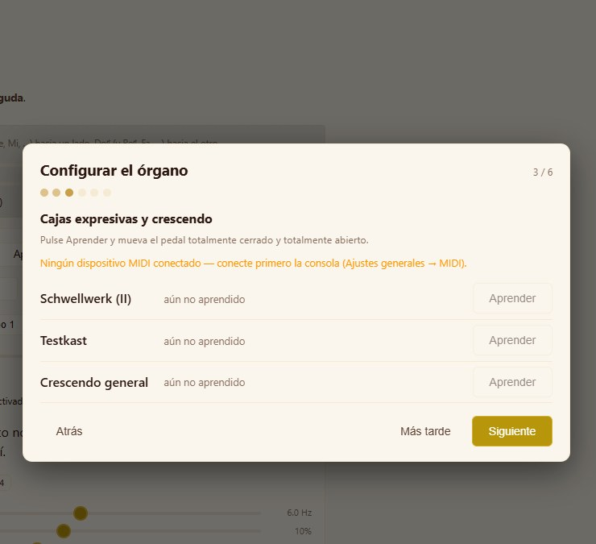
10. Atajos de teclado y consejos
| Tecla | Función |
|---|---|
| F1 F2 F3 | Órgano, Ajustes del órgano y Ajustes generales. |
| F11 | Pantalla completa (modo consola) activada o desactivada. |
| Esc | Salir de la pantalla completa. |
| Botón derecho o 3 s de pulsación | En un botón de la barra del combinador: vincula ese botón a un botón de la consola (aprendizaje MIDI). |
| Doble clic en el volumen | El volumen principal vuelve al valor predeterminado. |
| Tarjeta pulsada 3 s | En la biblioteca: vuelve a buscar la foto de esa tarjeta. |
- Todos los ajustes se guardan para cada órgano, también cuando cierras el órgano o el programa.
- Para una consola fija: activa Inicio automático con Windows y Cargar automáticamente el último órgano abierto y usa el modo consola.
- Con más de dos salidas: elige en Enrutamiento las salidas de cada teclado y después las mismas salidas para los ruidos.
11. Solución de problemas y comentarios
| Problema | Qué puedes probar |
|---|---|
| No hay sonido | ¿Funciona el motor? ¿Abajo pone «Audio activo»? ¿Está ajustado en Salida de audio el dispositivo correcto y coinciden las salidas de los teclados con tu interfaz de audio? Usa la señal de prueba para oír las salidas. |
| El teclado no reacciona | Abajo aparece «MIDI no conectado» mientras no haya un dispositivo MIDI. Revisa Ajustes generales → MIDI y el canal MIDI del teclado en Enrutamiento. |
| El órgano suena desafinado | Comprueba que la afinación automática de los tubos esté activada y elige en Sonido el temperamento «Original» o el que desees. |
| Crujidos o cortes | Reduce la polifonía, saca menos registros, desactiva la reverberación o elige un búfer mayor. Un búfer inicial corto exige un disco rápido; si no, elige uno más largo. |
| Memoria insuficiente | Elige un búfer inicial más corto, desactiva las muestras estéreo o las posiciones de escucha que no uses. |
| Los ruidos o los registros de efectos no se oyen por el altavoz correcto | En Enrutamiento, en «Salida de audio de los ruidos», elige las mismas salidas que para los teclados. |
Enviar comentarios… (Ajustes generales → Actualización y comentarios) prepara un mensaje con tu aviso y los archivos de registro de las últimas sesiones, para que el desarrollador pueda ver qué ocurrió. También puedes publicar el aviso en la página del proyecto en GitHub.